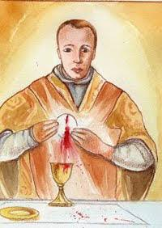
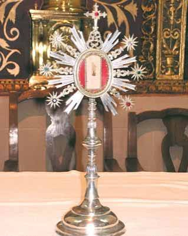
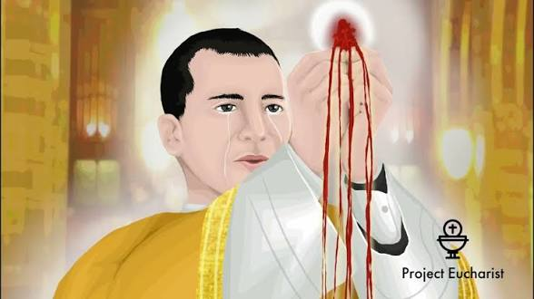

The 1370 Eucharistic miracle of Cimballa, Spain, known as the "Most Holy Doubtful Mystery," occurred when a priest struggling with doubt witnessed the consecrated Host transform into human flesh and bleed.
Father Tommaso had been privately suffering from doubts regarding the Real Presence of Christ in the Eucharist. During Sunday Mass, immediately after the consecration, the Host transformed into physical flesh and began to bleed, soaking the corporal linen. The congregation witnessed the event, and Father Tommaso’s doubts were replaced by deep, lifelong repentance.
The blood-stained altar cloth (the corporal) remains preserved in the local church to this day. Every year on September 12, the town holds a feast to commemorate this miracle, drawing pilgrims who honor this divine response to a human cry for faith.